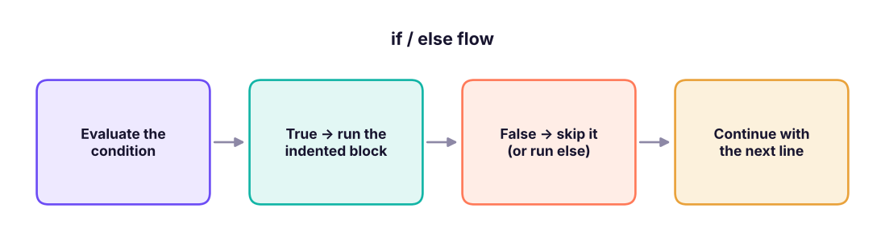

Control Flow: if, elif, else, Nested Conditions & match
Make programs decide. Learn indentation, if/elif/else, comparison and logical conditions, truthiness, conditional expressions (ternary), nested decisions, the match statement, and how Python's if maps to Excel's IF/IFS and SQL's CASE WHEN, with data-flavoured examples.
- Write correct if / elif / else blocks and explain why indentation matters
- Combine conditions with and, or, not, in, chained comparisons and truthiness
- Use conditional expressions and the match statement
- Order conditions correctly and avoid common branching bugs
- Translate a spreadsheet or SQL rule into Python
Decisions and indentation
A program normally runs line by line. Control flow lets it choose between paths. In Python, a colon : starts a block and indentation (4 spaces by convention) says which lines belong to it.

marks = 82
if marks >= 40:
print("Pass")
print("Well done!")
print("This line always runs")Pass Well done! This line always runs
if True:
print("not indented") # IndentationError: expected an indented block after 'if' statementUse 4 spaces (never mix tabs and spaces). Everything in the same block has the same indentation. A missing colon or wrong indentation causes SyntaxError / IndentationError.
if / elif / else
marks = 82
if marks >= 90:
grade = "A+"
elif marks >= 75:
grade = "A"
elif marks >= 60:
grade = "B"
elif marks >= 40:
grade = "C"
else:
grade = "Fail"
print(marks, "->", grade)82 -> A
Python checks the conditions top to bottom and runs the first one that is true, then skips the rest. This is Excel's nested IF / IFS and SQL's CASE WHEN (Excel Lesson 5, SQL Lesson 7).
If you test marks >= 40 first, an 82 gets "C" because the first true branch wins. Put the most specific / strictest condition first.
for m in (95, 82, 61, 45, 12):
g = "A+" if m >= 90 else "A" if m >= 75 else "B" if m >= 60 else "C" if m >= 40 else "Fail" # chained conditional expression
print(m, g)95 A+ 82 A 61 B 45 C 12 Fail
Conditional expression (ternary)
value_if_true if condition else value_if_false is Python's one-line IF():
salary = 97000
band = "High" if salary >= 100000 else "Standard"
bonus = salary * 0.1 if band == "High" else 0
print(band, bonus)Standard 0
Conditions
Comparison and logical operators
age, city, income = 29, "Pune", 85000
print(age >= 18 and city == "Pune") # both must be true
print(city in ("Pune", "Mumbai") or income > 100000) # at least one
print(not (age < 18))
print(18 <= age < 60) # chained comparison
if 18 <= age < 60 and income >= 50000 and city in ("Pune", "Mumbai", "Delhi"):
print("Eligible for the metro premium plan")True True True True Eligible for the metro premium plan
Truthiness
Python treats "empty" and zero-like values as False (Lesson 2), so you can test them directly:
name = ""
items = [3, 5]
note = None
if not name: print("name is empty")
if items: print("items has", len(items), "elements")
if note is None: print("note is missing") # use `is None`, not `== None`
if 0 < len(items) <= 5: print("small list")name is empty items has 2 elements note is missing small list
Membership and string tests
status = "Shipped"
if status in ("Shipped", "Delivered"): print("order has left the warehouse")
email = "kavya.iyer@abc.in"
if "@" in email and email.endswith(".in"): print("Indian email address")order has left the warehouse Indian email address
Nested conditions
is_member, cart_value = True, 3200
if cart_value > 0:
if is_member:
discount = 0.1 if cart_value >= 3000 else 0.05
else:
discount = 0.02 if cart_value >= 3000 else 0
print(f"Discount: {discount:.0%}")
else:
print("Cart is empty")Discount: 10%
Prefer flat conditions with and to deeply nested ones when they read clearly:
def shipping_fee(value, is_member):
if value <= 0: return 0
if is_member and value >= 500: return 0
if value >= 1500: return 0
return 49
print([shipping_fee(v, m) for v, m in [(0, True), (600, True), (600, False), (1600, False)]])[0, 0, 49, 0]
Returning early (guard clauses) keeps code flat and readable.
match: structural pattern matching (3.10+)
match compares one value with several patterns: a clean alternative to a long chain of == tests.
def describe_status(code):
match code:
case 200 | 201:
return "success"
case 301 | 302:
return "redirect"
case 404:
return "not found"
case int(c) if 500 <= c < 600:
return "server error"
case _:
return "unknown"
print([describe_status(c) for c in (200, 404, 503, 999)])['success', 'not found', 'server error', 'unknown']
def handle(command):
match command.split():
case ["load", filename]: return f"loading {filename}"
case ["save", filename]: return f"saving {filename}"
case ["quit"]: return "bye"
case _: return "unknown command"
print(handle("load sales.csv"), "|", handle("quit"), "|", handle("fly away"))loading sales.csv | bye | unknown command
Data examples
Rule-based bonus (the same as an Excel IF + AND)
import pandas as pd
emp = pd.read_csv("employees_small.csv")
def bonus(salary, rating, dept):
if rating >= 5: rate = 0.15
elif rating >= 4: rate = 0.10
elif rating >= 3: rate = 0.05
else: rate = 0
if dept == "Sales": rate += 0.02 # extra for Sales
return round(salary * rate)
emp["bonus"] = [bonus(s, r, d) for s, r, d in zip(emp.salary, emp.rating, emp.department)]
emp[["name", "department", "salary", "rating", "bonus"]].head(8)| name | department | salary | rating | bonus | |
|---|---|---|---|---|---|
| 0 | Kavya Iyer | HR | 97000 | 4 | 9700 |
| 1 | Imran Reddy | Finance | 157000 | 3 | 7850 |
| 2 | Harpreet Kulkarni | Finance | 131000 | 4 | 13100 |
| 3 | Diya Iyer | HR | 90000 | 4 | 9000 |
| 4 | Simran Iyer | HR | 139000 | 4 | 13900 |
| 5 | Saanvi Rao | HR | 83000 | 4 | 8300 |
| 6 | Isha Mehta | Sales | 57000 | 3 | 3990 |
| 7 | Aarav Kulkarni | HR | 101000 | 2 | 0 |
(In pandas you would use np.where, np.select or .apply: Lesson 19. Writing the rule once as a function makes it testable.)
A small decision tree: loan pre-check
def loan_precheck(age, income, existing_emi, credit_score):
reasons = []
if age < 21 or age > 60: reasons.append("age outside 21–60")
if income < 25000: reasons.append("income below ₹25,000")
if existing_emi > 0.5 * income: reasons.append("EMIs exceed 50% of income")
if credit_score < 650: reasons.append("credit score below 650")
return ("Eligible", []) if not reasons else ("Review", reasons)
print(loan_precheck(34, 70000, 20000, 730))
print(loan_precheck(19, 22000, 15000, 610))('Eligible', [])
('Review', ['age outside 21–60', 'income below ₹25,000', 'EMIs exceed 50% of income', 'credit score below 650'])Collecting all failing reasons is more useful than stopping at the first, and shows how a series of independent if statements (not elif) is sometimes right.
if/elif vs several ifs
| Pattern | Use when |
|---|---|
if … elif … else |
Choices are mutually exclusive: only one branch should run |
Several separate if |
Each condition is independent: more than one may apply (collecting reasons, applying several rules) |
Common mistakes
| Mistake | Fix |
|---|---|
if x = 5: (assignment) |
if x == 5: |
if x == 3 or 4: (always true: 4 is truthy) |
if x in (3, 4): |
if x == None: |
if x is None: |
Comparing floats with == |
math.isclose |
Forgetting elif ordering |
strictest first |
if len(items) > 0: (verbose) |
if items: |
| Deep nesting | guard clauses / and / helper functions |
Take an Excel rule from your own work, such as a nested IF for commission, and ask an assistant to convert it to Python with test cases. Then write five edge-case tests yourself (boundaries like exactly 50,000, blanks, negative values) and see if the code survives.
Summary
- A colon starts a block; indentation (4 spaces) defines it.
if / elif / elseruns the first true branch. - Combine conditions with
and,or,not,in, chained comparisons; empty/zero/None are falsy; testNonewithis None. - Use the ternary
a if cond else bfor simple choices and thematchstatement for many exact cases and patterns. - Order conditions from strictest to loosest; prefer flat code with guard clauses; use separate
ifs when several rules can apply. - Wrap rules in functions so they can be tested and reused.
1. What does x if cond else y do?
2. Which condition is correct for "x is 3 or 4"?
x == 3 or 4 is always truthy because 4 is truthy.3. With marks = 82, which grade does if marks>=40: "C" elif marks>=75: "A" give?
4. Which is the best way to test for None?
is None tests identity and avoids surprises with falsy values like 0.5. What is a guard clause?
6. What does match do?
Write delivery_charge(order_value, city, express): free if order ≥ ₹1,500; otherwise ₹49 in metros (Delhi, Mumbai, Bengaluru, Chennai, Kolkata, Hyderabad) and ₹79 elsewhere; express adds ₹100 unless the value is ≥ ₹5,000. Test five cases including boundaries.
Show solution
METROS = {"Delhi", "Mumbai", "Bengaluru", "Chennai", "Kolkata", "Hyderabad"}
def delivery_charge(value, city, express=False):
fee = 0 if value >= 1500 else (49 if city in METROS else 79)
if express and value < 5000: fee += 100
return fee
tests = [(1500, "Pune", False), (1499, "Delhi", False), (1499, "Pune", True), (5000, "Pune", True), (100, "Mumbai", True)]
print([delivery_charge(*t) for t in tests]) # [0, 49, 179, 0, 149]Q: What is the difference between elif and multiple if statements?
elif branches are mutually exclusive (only the first true runs); separate ifs are all evaluated, so several can run.
Q: How do you write a switch-case in Python?
Use match/case (3.10+), or a dictionary mapping values to functions or results.
Q: What are falsy values in Python?
False, None, 0, 0.0, "", [], {}, (), set(), and objects whose __bool__ returns False or __len__ returns 0.
Q: How do you replace nested if/else cleanly? Guard clauses, combined conditions, lookup tables (dicts), or polymorphism.